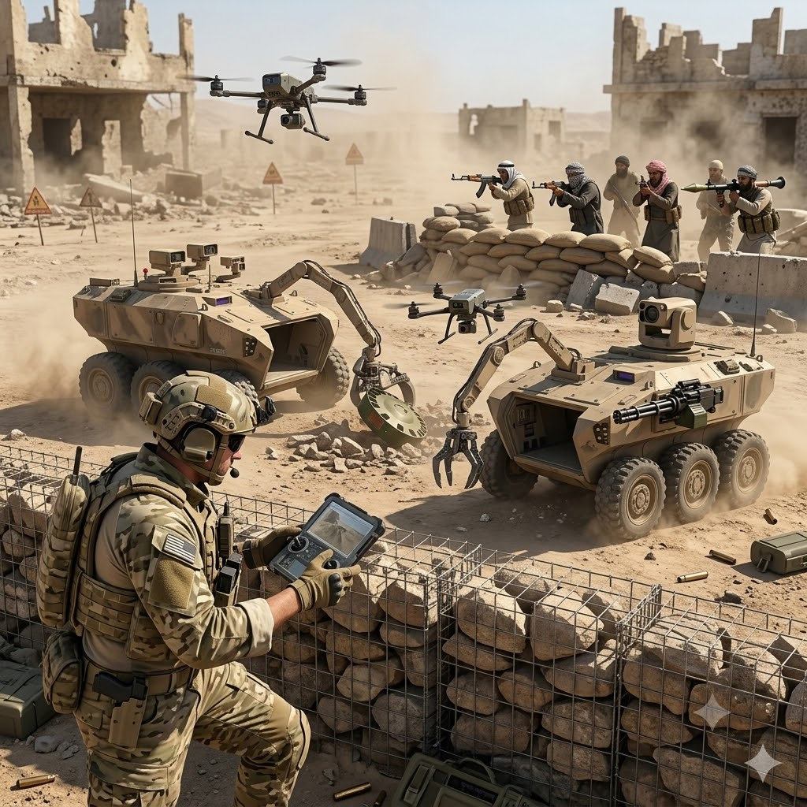
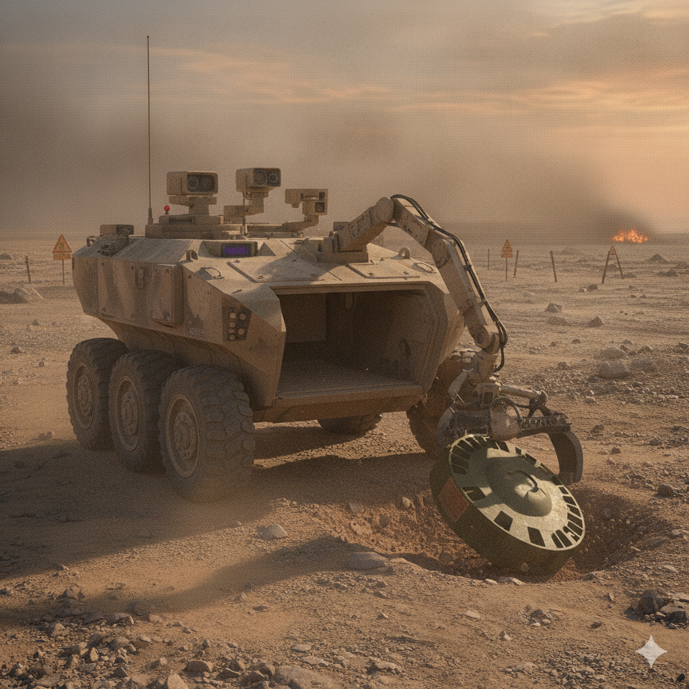
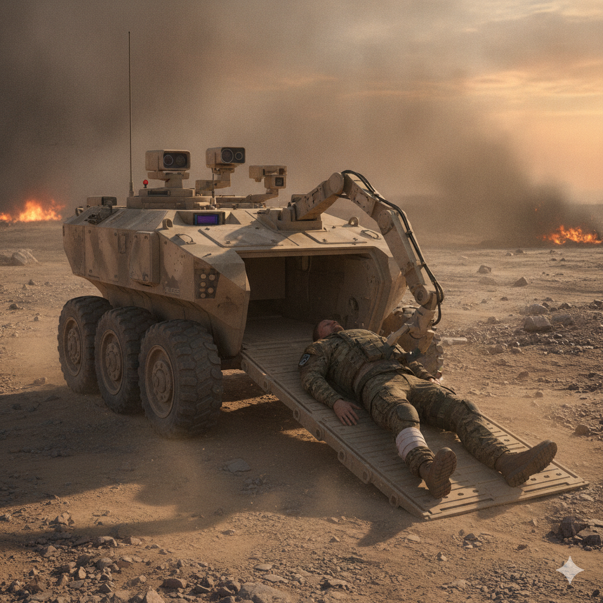
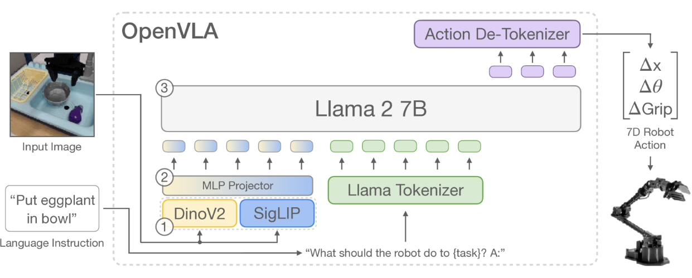
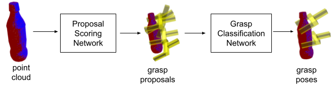
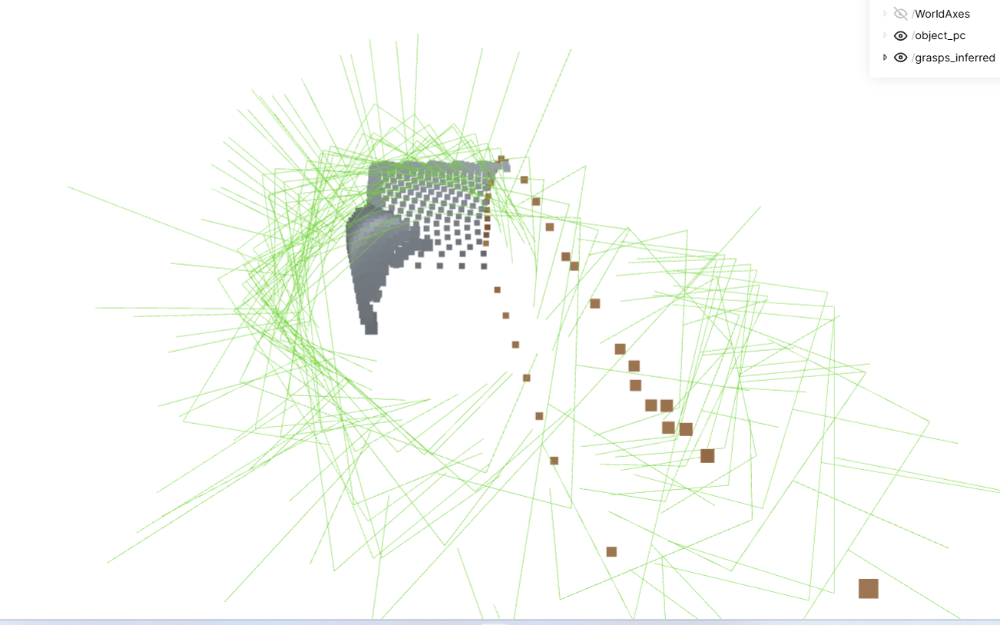

מ-Vision-Language Models ועד למידה מקצה לקצה —
כיצד AI מאפשר שליטה רובוטית מדויקת
תנועה במרחב — בתוך ובחוץ, סביבות מובנות ולא מובנות. רובוטים על גלגלים, רחפנים, כלי רכב אוטונומיים.
תנועת הגוף — רובוטים עם רגליים, הומנואידים, quadrupeds. שיווי משקל, הליכה והתאמה לשטח.
אינטראקציה עם עצמים — אחיזה, דחיפה, הרכבה. דורש חשיבה תלת-ממדית מדויקת ואינטואיציה פיזית.
מערכות מודרניות משלבות יותר ויותר את שלושתם — הומנואיד שהולך, מנווט בחדרים ומרים עצמים.
אוטונומיה במקרה של מחסור במפעילים לעומת כמות הרובוטים ו/או מגבלת תקשורת



תובנה מרכזית: VLMs מצטיינים ב"מה לעשות" ו"למה", אך מתקשים ב"כיצד בדיוק לנוע". שלוש גישות משלימות מטפלות בפער זה ←
קלטים: מצלמות + הנחיית משימה + proprio אופציונלי · פלט: פעולות הרובוט

π₀.5 מבצעת פתיחת מגירה, אחיזת חפץ והנחתו בתוכה — דוגמה ל-dexterous manipulation בסביבה אמיתית.
מודל אחד מקצה לקצה — מאומן על מיליוני הדגמות רובוטיות
דוגמאות: π₀.5 (Physical Intelligence) · OpenVLA · Octo · ACT · Diffusion Policy
כל וריאציה עלולה להיכשל אם לא מיוצגת מספיק בנתוני האימון
כדי להכליל דרושות מאות מיליוני או מיליארדי דוגמאות — מגוונות ואיכותיות
שמאל, ימין, מרכז, מסובב, מוטה — הרובוט חייב לראות כל סידור במהלך האימון
צבעים, מרקמים, גדלים, צורות — מדיניות מבוססת-פיקסל מבצעת over-fit לתכונות אלו
בהיר, חשוך, השתקפויות, צללים — משפיעים דרמטית על אותות הבקרה מבוססי תמונה
שולחן, דלפק, רצפה — פיקסלי רקע לא-רלוונטיים מבלבלים מדיניות מרחב-פיקסל
עיצוב הזרוע, סוג ה-Gripper, מיקום מצלמה — העברה בין רובוטים אינה טריוויאלית
עצמים נוספים, חסימות, כמויות משתנות — תפיסה ותכנון קשים יותר
פתרונות: קידודי Foundation (DINOv2, CLIP) אינווריאנטיים יותר מפיקסלים גולמיים · אוגמנטציה (DemoGen, MimicGen) מייצרת וריאציות אוטומטית · ייצוגים תלת-ממדיים מפחיתים רגישות לנקודת מבט
מדיניות VLA מאומנת באמצעות imitation learning על ~100 הדגמות — הרובוט לומד לזהות, להתקרב ולאחוז בצעצוע ספציפי באופן אמין.
שימוש בשלט או בזרוע רובוטית, להדגמת משימה על ידי אדם.הנפוץ ביותר אך איטי ומייגע. מכשירי VR (Apple Vision Pro + ARKit) מקצרים זמן איסוף ב-4–5× לעומת טלה-אופרציה קלאסית.
UMI Gripper, אקסו-שלד AirExo — בני אדם מבצעים משימות באופן טבעי, ללא רובוט. הבנת וידאו מעבירה פעולות cross-embodiment. מהיר וזול לסביבות מגוונות.
VLMs מייצרים משימות, מדמים עם RL ותכנון מסלול, מתעדים כ-datasets. דוגמאות: RoboGen, GenSim2, AutoRT. זול; פער sim-to-real נותר אתגר.
טרייקטוריות מומחה → וריאנטים עם מיקומי עצמים, צבעים וסצנות שונים. DemoGen, DexMimicGen, Real2Render2Real. מכפיל גודל ה-dataset בזול.
שימוש בשלט או בזרוע רובוטית להדגמת משימה על ידי אדם — השיטה הנפוצה ביותר לאיסוף דוגמאות. רובוט SO-101 מ-Hugging Face LeRobot.
בני אדם מבצעים משימות יומיומיות — הוידאו הופך לנתוני אימון לרובוט, ללא צורך ברובוט בשלב האיסוף. גישות כמו UMI Gripper ו-AirExo ממנפות cross-embodiment transfer.
הכלים מתווכים את החישה ל-VLM ועוזרים בחיזוי נקודות קריטיות למשימה
"פתח מגירה, קח ספל"
תכנון ברמה גבוהה ופירוק תת-משימות
תפיסה · אחיזה · 3D · VLA
זיהוי הצלחה/כישלון, ניסיון חוזר
מסלולי תנועה
כלים
זיהוי עצמים, סגמנטציה, הערכת יציבה
חיזוי אחיזה יציבה, זיהוי affordance
Point Cloud, צירי ארטיקולציה, חשיבה מרחבית
בקרת closed-loop ברמה נמוכה לתת-משימות פשוטות — ה-VLM מאציל ביצוע למדיניות VLA מקומית
Realtime feedback & correction — VLM קטן ומהיר (local) שרץ בלולאה, מזהה כישלון או סטייה ומתקן את המסלול תוך כדי תנועה
קריטי כשהעצם מוסתר, ולמשימות הדורשות תחושה (עיצוב, הידוק)
יתרון: קל יותר לאבחון וניפוי שגיאות, מודולרי, מטפל במשימות מורכבות ארוכות-טווח | חיסרון: איטי יותר; שגיאות עלולות להתפשט לאורך ה-pipeline; מסובך ודורש יותר הנדסה
VLM agent עם כלי תפיסה ובקרה, פועל zero-shot — ללא אימון ספציפי למשימה. ה-VLM מתכנן, מזהה את הידית ומבצע את הפיקוד.
VLM Agent learning from Experience via Self Feedback


מבין כל האחיזות המוצעות: איך בוחרים אחיזה המתאימה למשימה ולאובייקט
מודל יצירת וידאו fine-tuned בתור מוח הרובוט
מהיר, אלגנטי, מצוין במשימות קצרות. רעב לנתונים ושביר מחוץ לתפלוגת האימון. מתאים למשימות חוזרות ומוגדרות היטב.
מודולרי, פרשני, zero-shot למשימות חדשות. משתמש ב-VLA ככלי-משנה לבקרה ברמה נמוכה. איטי יותר אך ניתן להרכבה.
prior פיזיקלי עשיר מ-pre-training על וידאו אינטרנט. תכנון על ידי דמיון תוצאות. עדיין מתבגר לשליטה מדויקת במפרקים.
התחום מתכנס לעבר מערכות היברידיות — VLMs מתכננים משימות ארוכות-טווח, VLAs מטפלים בבקרה מדויקת ברמה נמוכה, ומודלי עולם מאפשרים תכנון בתנאי אי-ודאות.
הוכרז 2021, אב-טיפוס 2022. Gen 3 (2026) — ידיים משופרות, הולך ורוקד. מאות יחידות בפסי ייצור Tesla (2025). מחיר יעד ~$30K. ביקורות ציינו שחלק מהדגמות בוצעו בטלה-אופרציה.
חברה נורווגית (גיבוי OpenAI). Neo Beta — הומאנויד, עובד במחסנים. מתמקד בביצועי עבודה בסביבה אנושית. מדגים משימות בית ותפעול אוטונומי.
נוסדה 2023 ע"י מהנדסי Huawei. ייצור המוני החל דצמבר 2024 — 962 יחידות. A2 שבר שיא גינס: הליכה 106 ק"מ (נובמבר 2025). מוצגת ב-MWC 2026. עשרות סטארטאפים סיניים נוספים.
רובוטיקה — חברות לא מפרסמות מודלים או תוצאות benchmark סטנדרטיות. רוב הסרטונים הם cherry-picked בלבד. אם נסתמך רק על סרטונים — מאז 2018 רובוטים מבצעים משימות מורכבות.
תעשיית LLM — שקופה בהרבה: מפרסמות benchmarks סטנדרטיים, ניתן לבחון בדפדפן ע"י פרומפטים, מודלים רבים בקוד פתוח ו-open weights. קל לאמת ביצועים באופן עצמאי.